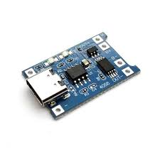
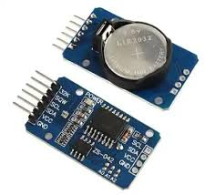
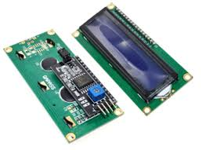
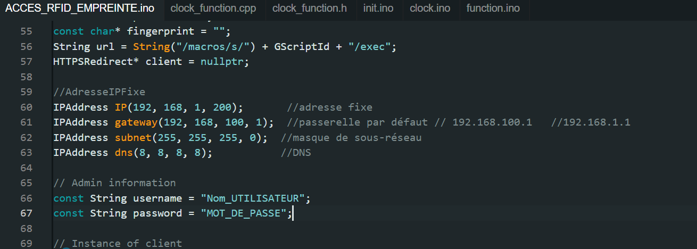
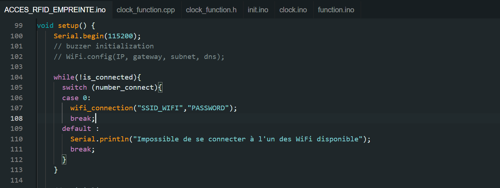
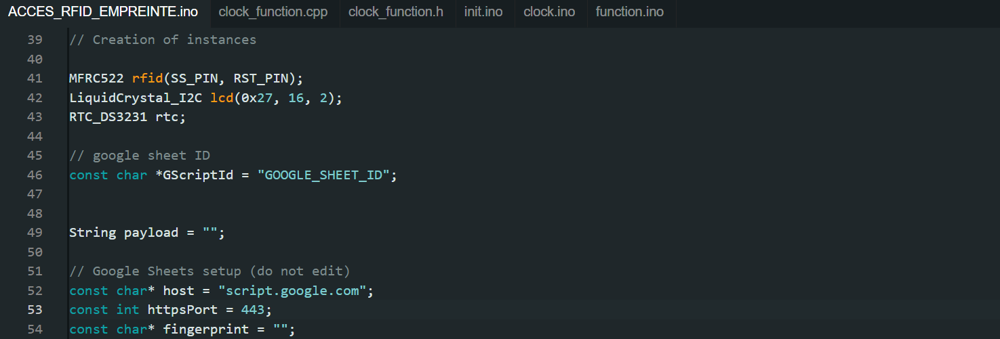

Documentation - Système de Gestion de Badges RFID
Présentation du Système
Ce système de gestion des employés repose sur une technologie de badges RFID. Il utilise un ESP8266 pour contrôler la lecture des badges, gérer les utilisateurs (ajout, suppression) et stocker les données dans une base locale en l'absence de connexion réseau. Lorsque la connexion est rétablie, les données sont automatiquement transférées vers Google Sheets. Il l'administrateur de suivre les horaires d'arrivée des employés de manière précise et efficace grâce à un module horloge.
Lorsqu'un employé approche son badge RFID du capteur, le microcontrôleur lit l'identifiant du badge et l'enregistre dans une feuille Google via une connexion WiFi. Le système utilise un serveur Web intégré pour la gestion des utilisateurs (ajout, suppression, etc.) et affiche les informations sur un écran LCD.
Principales bibliothèques utilisées :
Fonctionnalités
- Ajout d'un utilisateur : Permet d'enregistrer un utilisateur avec un badge RFID.
- Suppression d'un utilisateur : Supprime un utilisateur et son badge associé.
- Changement du mode : Permet de définir le mode du système (Badge ou Empreinte etc).
- Historique des accès : Enregistre les passages des utilisateurs, ceux qui ont été supprimés ou ajoutés et permet de consulter cet historique.
Implémentation
1. Matériel Utilisé
- ESP8266
- Lecteur RFID (RC522)
- Badges RFID
- Module Horloge DS3231
- Ecran LCD
- Module de charge
- Jumpers
- Arduino IDE
- VScode
Partie hardware:
Partie software:
2. Installation
Suivre ces étapes pour installer le système :
- Installation des logiciels nécessaires
-
Installation des logiciels nécessaires
Téléchargez et installez l’IDE Arduino depuis Arduino si vous ne l'avez pas encore.
-
Configuration de l'ESP8266 sur Arduino IDE
Ouvrez l'IDE Arduino.
Allez dans File > Preferences.
Dans la section "URL supplémentaire pour le gestionnaire de cartes", ajoutez l'URL suivante : https://arduino.esp8266.com/stable/package_esp8266com_index.json
Allez ensuite dans Tools > Board > Board Manager, recherchez ESP8266 et installez-le.
-
Installation des bibliothèques
Ouvrez l'IDE Arduino, puis allez dans Sketch > Include Library > Manage Libraries
Recherchez et installez les bibliothèques suivantes :
- Câblage
esp8266

Module de charge TP4056
Module RFID RC522

| RC522 | ESP8266 |
|---|---|
| SDA | D8 |
| SCK | D5 |
| MOSI | D7 |
| MISO | D6 |
| IRQ | Non utilisé |
| GND | GND |
| RST | Non utilisé |
| 3.3V | 3.3V |
Module Horloge
| Module Horloge DS3231 | ESP8266 |
|---|---|
| SDA | D2 |
| SCL | D1 |
| VCC | 3.3V |
| GND | GND |
Ecran LCD
| Ecran LCD | ESP8266 |
|---|---|
| SCL | D1 |
| SDA | D2 |
| VCC | VIN |
| GND | GND |
3. Préparation du code
- Télécharger le code source sur github.
- Modifications nécessaires
- Étape 1: Création d'un Google Sheets et Script de Google Apps
- Creez un google sheet
- Creez un nouveau document
-
Étape 2: Nommage des Feuilles Google Sheets
- Nommer les Feuilles:

Creez trois feuilles que vous nommez: "History Users", "Registered Users", "Deleted Users"
Dans Google Sheets, assurez-vous que la feuille de calcul où les données RFID seront envoyées a un nom unique. -
Étape 3: Créez un Script de Google Apps
- Dans votre Google Sheets, allez dans le menu Extensions > Apps Script.
- Supprimez tout le code par défaut et collez le code se trouvant dans le fichier google_script.js
- Remplacez 'VOTRE_ID_SHEET' par l'ID de votre feuille Google Sheets. Vous pouvez obtenir l'ID de la feuille depuis l'URL de votre Google Sheets (il se trouve entre /d/ et /edit).

-
Étape 4: Déployez le Script

- Cliquez sur Déployer > Nouveau Deploiement.

- Choisissez le type de déploiement Web App (Application Web).

- Donnez une description à la version (par exemple : "Version 1") et cliquez sur Créer.
- Sous "Qui a accès à l'application", sélectionnez "Tout le monde".
- Une fois déployé, une URL et un ID seront générés pour votre script. Copiez l'ID, car il sera utilisé dans le code Arduino pour envoyer les données RFID à votre feuille Google Sheets.
- Lorsque vous déployez le script pour la première fois, il vous sera demandé de l'autoriser. Cliquez sur Autoriser et suivez les instructions pour donner les permissions nécessaires.
Préparation et Installation de LittleFS
Pour utiliser LittleFS avec l'ESP8266 afin de stocker localement des fichiers (comme les informations de l'utilisateur ou les logs), vous devez installer et configurer LittleFS dans votre environnement de développement Arduino.Suivez ce lien pour installer LittleFS.
- Modification du code Arduino
-
Modification des Informations Administrateur
Dans le Dossier ACCES_RFID_EMPREINTE Ouvrez le fichier ACCES_RFID_EMPREINTE.ino
Remplacez Nom_UTILISATEUR par le nom d'utilisateur administrateur souhaité et MOT_DE_PASSE par le mot de passe administrateur.
- Configuration WiFi
Pour permettre à l'ESP8266 de se connecter à votre réseau WiFi, vous devez ajouter les identifiants WiFi (SSID et mot de passe) dans votre code Arduino.
Remplacez SSID_WIFI et PASSWORD par les identifiants WiFi de votre réseau.
- Lien vers le Script Google Sheets
Vous devez ajouter l'ID de déploiement générée lors de la configuration de Google Apps Script dans votre code Arduino. Cet ID permettra d'envoyer les données RFID vers votre feuille Google Sheets.
Remplacez GOOGLE_SCHEET_ID par l'ID du script généré lors du déploiement de votre Google Apps Script (cela correspond à l'ID générée pour le Web App).
- Étape 1: Création d'un Google Sheets et Script de Google Apps